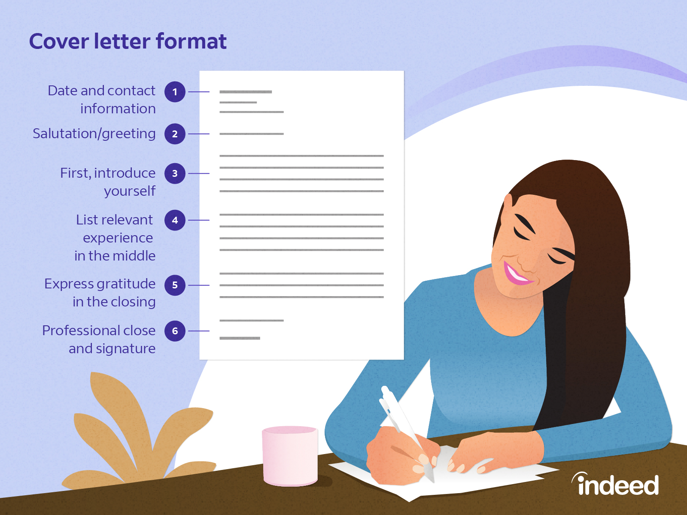
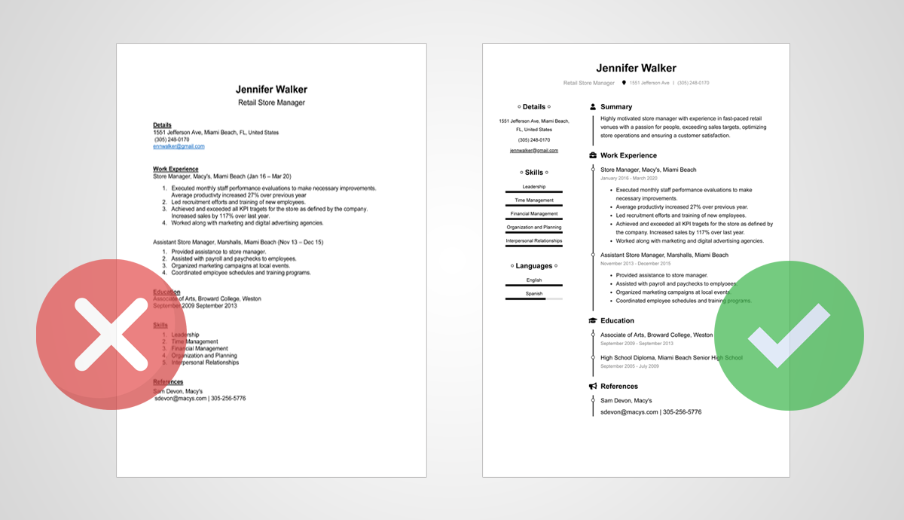

How to get your resume past Artificial Intelligence (AI) screening tools: 5 tipsMost resumes must pass through an automated test – based on AI or RPA – before humans ever see them. Career experts share tips, from language to formatting, on how to build a resume that clears that first AI screening tool hurdle 
The first challenge that IT pros need to beat when job-hunting is to get past the front door. Those doors, now more than ever, are often virtual: online job boards, networking sites like LinkedIn, corporate application tracking systems (ATS), and so forth. That’s no secret. What’s more opaque is the behind-the-scenes pre-screening that is applied – often in automated fashion – to a virtual pile of resumes. This typically leads to the culling of multiple potential candidates from consideration before a human hiring manager or recruiter even gives their resumes a passing look. (And when we say “passing look,” we mean it: An oft-cited 2018 eye-tracking study conducted by the careers site Ladders found that human recruiters spend an average of just 7.6 seconds reading a resume during an initial review before moving on to the next one.) Why companies use AI resume screening tools
For job hunters, it’s useful to think about the why behind this process. Recruiters and hiring managers spend a lot of their time reading resumes. As is the case with a lot of repetitive, time-consuming work, it can literally pay to find ways to become more efficient, and HR tasks are no exception. (This becomes increasingly true for companies that receive hundreds of applications for a single position, especially when some of the resumes they receive simply don’t possess the qualifications required for the job.) Some folks will point out that there are multiple HR processes ripe for automation. The software vendor UiPath states that Robotic Process Automation (RPA) can enable HR pros to reclaim as much as 40 percent of their time. That’s the main idea behind automatically pre-screening resumes based on certain criteria. The automation piece is commonly referred to as Artificial Intelligence (AI), but whether or not it’s actually AI or a different (but related) technology such as RPA, the principle remains more or less the same: Depending on where and how you apply for your next IT job, your resume may have to pass through some kind of automated test before it gets a chance to be reviewed by human eyes. To be clear, not every organization does this. We reached out to one in-house recruiting executive at a tech firm who said their firm isn’t currently leveraging AI in their hiring processes, for example. But if you’re directly applying for jobs through a corporate ATS or other online application channels, there’s a growing chance there are some kind of automated filters in place. How to build a resume that gets past AI screening tools: 5 tipsWe asked two experienced IT recruiters who review virtually countless resumes as part of their work with both individual job seekers and hiring companies to shed some light on “beating the AI” – whether the system is actually leveraging AI or another form of automation. These are the tips and tricks they shared for getting past the first step and boosting your odds of success during a job hunt. 1. Don't go overboard trying to "beat the system"
It’s important for job seekers who are applying online to understand that this is indeed a thing. Not realizing that an ATS or similar channel might be automatically pre-screening resumes is not all that different than submitting a resume full of typos. It might indicate a lack of effort or care. That said, don’t stress out about it or become obsessive about trying to game the system. “It can be hard to ‘beat the AI’ without knowing the phrases it’s looking for,” says Matt Deneroff, branch manager for Robert Half Technology in Washington, D.C. “Every system is different and you don’t want to appear to be trying to simply beat the system when applying.” In other words, going overboard isn’t necessarily productive since there’s a black box element to this process. These are typically rules-based engines, especially if RPA is involved – and you probably don’t know the rules. And it can actually be counterproductive if your resume reads like a game of keyword bingo and, as Deneroff notes, gives a human hiring manager the sense that you’re trying to fake your way through the process or are otherwise overselling your qualifications. 2. Tailor your resume to specific job descriptions
This is smart resume advice overall: Customize (not to be confused with “exaggerate” or “fabricate”) your resume for specific positions. In the case of an ATS that uses some form of automated prescreening, doing so will have the added benefit of increasing the likelihood that the text in your resume hits the mark in terms of screening criteria the company may be using. “Our best advice is that tailoring your resume to a specific job description [is the best way to get past initial screening phases],” Deneroff says. “Not only will you be tailoring it – including specific buzzwords that were mentioned in the job description, [for example] – but you’ll also be showing the hiring manager that you have the experience [they’re specifically looking for], which is most important.” Keywords do matter, provided you’re not actually trying to game the application process or mislead someone. As Deneroff indicates, the job description itself is providing you a working vocabulary as a foundation for tailoring your resume accordingly. Read the description closely. If the job description lists Kubernetes and service mesh experience as important, your resume should, too. (Otherwise, why are you applying for that particular position?) Make sure things are spelled out and spelled correctly, too. Rules-based technologies like RPA aren’t usually smart enough to realize you’ve made a mistake. For similar reasons, don’t rely on too much industry shorthand or jargon; the system might not be set up to recognize or understand it. 3. Make smart formatting choices
RPA bots and other rules-based automation aren’t really “reading” resumes so much as “parsing” them. That’s why keywords – spelled properly, among other necessities – matter. As does cutting down or eliminating too much “IT-speak.” In this context, that means terms, phrasing, or abbreviations that few people outside of IT will recognize or use. (“K8s” instead of the full name, Kubernetes, is a useful example here – err on the side of the latter.) This is also why formatting choices matter – sometimes a lot. Even your resume’s file type can be the difference between getting past an ATS screen or not. “For a resume to pass screening tools like AI or RPA bots, make sure it is clean, plain, and in a Word document,” says Jenna Spathis, unit manager of the technology recruiting team at LaSalle Network. “I have noticed more mis-parsed information when resumes are submitted as PDFs rather than Word documents.” “Plain” is a good guiding principle: As in plain, readable text – and little else. That could be counterintuitive to someone in a design-oriented role, such as a UI/UI position. But save the creative flair for a later phase of the process. “Formatting issues are a big reason for resumes not being passed through an applicant tracking system,” Spathis says. As an example, someone might have their skills, education, and experience information – all core information on a resume – in different text boxes in a column view. “I have noticed those resumes also parse incorrectly when going through pre-screening systems,” Spathis says. “RPA bots are in place to pull and parse the most relevant information, including contact information, experience, and education.” In other words: Even if your creatively designed resume does pass muster, the system might not capture all of the information it’s supposed to – which means that the recruiter or hiring manager might get an incomplete first impression. “To ensure all relevant information is being pulled, a plain, simple Word document with clear headers is the best course of action,” Spathis says. “Clear headers include Summary, Education, Professional Experience, Certifications, and Skills or Technical Skills.” Spathis recommends software engineers and other relevant roles include a link to your Github. (Human reviewers will likely want to take a look.) Also, if you do have a more creative or visually appealing version of your resume, you can always share that in a later phase. 4. The "usual" resume advice is still widely applicableThe fundamentals still matter in the era of online applications and ATS tools – especially as AI plays an increasing role in the early phases of recruiting. Two big pieces of conventional career wisdom stand out in this light. First, get feedback on your resume. That could be a peer in the industry, a friend, a recruiter, or a professional resume reviewer or career coach. But there’s never really a bad time to hear input from others who can give you an informed and honest opinion. That’s especially important to remember if you’re applying to lots of places and hearing nothing in response. Ask (or pay) someone to review your resume – there may be something you missed that’s hurting your chances. Second, treat online applications via a corporate ATS or third-party job app as one tool – but not your only tool. Strategies such as tapping your network (and your network’s networks) are as important as ever because with online applications you risk not even getting past the first step. You need a multi-pronged search strategy. 5. Remember: A strong resume is just the first stepYes, the first step is important, but it’s just that – a first step. Among other reasons (ethical considerations included) why it’s not a good idea to try to flat-out game an ATS or other app is that even if you succeed, you still have a long way to go. Yes, do the above in terms of things like keywords and formatting. But remember that your resume is just a calling card or introduction of sorts. Feedback
|